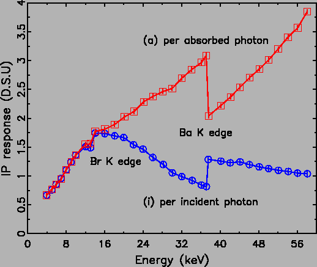

The performance of the image plate as an X-ray area detector has been
reviewed by Amemiya and others
[48,46,47,49,50,51,52,53]
in great detail. Here we briefly summarize those characteristics for
completeness.
- Detective quantum efficiency
- The definition of detective
quantum efficiency (DQE) is
DQE = (So/No)2/(Si/Ni)2 where
S is signal and N is noise (the standard deviation of the
signal), and subscripts o and i refer to the output and input,
respectively. As scattering events are random following the Poisson
distribution, the
(Si/Ni)2 term is just the Si. The
background noise level of the IP is usually less than 3 X-ray
photons/(100
 m)2, which in practice largely depends on the
noise level of the IP readout system. The relative uncertainty of
the IP deviates from an ideal detector at high exposure levels
(
m)2, which in practice largely depends on the
noise level of the IP readout system. The relative uncertainty of
the IP deviates from an ideal detector at high exposure levels
( 100 X-ray photons/(100 m)2). The ``system
fluctuation noise'' saturates the relative uncertainty of the IP
results around the 1% level. The origin of the system fluctuation
noise includes non-uniformity of absorption, non-uniformity of the
color-center density, fluctuation of the laser intensity,
non-uniformity of PSL collection, and fluctuation of the
high-voltage supply to the PMT.
100 X-ray photons/(100 m)2). The ``system
fluctuation noise'' saturates the relative uncertainty of the IP
results around the 1% level. The origin of the system fluctuation
noise includes non-uniformity of absorption, non-uniformity of the
color-center density, fluctuation of the laser intensity,
non-uniformity of PSL collection, and fluctuation of the
high-voltage supply to the PMT.
- Dynamic range and linearity of the IP response
- The dynamic
range refers to the detectable weakest and strongest signal with
acceptable distortion. One dimensionless definition is taken as the
ratio between the maximum counts in the linear regime and the
lowest detectable signal (determined by the intrinsic noise of the
detector system). The IP has rather good dynamic range of 105:1,
with linear response range from 8×101 to 4×104
photons/(100 m)2. The error rate is less than
5%. Sometimes, two sets of PMTs are necessary to cover the entire
dynamic range of the IP.
- Spatial resolution and active area size
- The determining
factor of the spatial resolution of the IP is the laser-light
scattering in the phosphor during the readout. The laser-light
scattering originates from a mismatching of the refractive indices
at the boundaries of phosphor crystal grains. When the IP is read
with a 100 m square laser size, the spatial resolution is
limited by the linear spread function with 170 m full width at
half maximum (FWHM). The point spread function of IP systems has
been studied by Bourgeois et al. [54] in detail. The
active area size of the image plate is rather important for PDF
studies which need large IPs. Commercially available IPs have
various standard sizes ranging from 127×127 mm2,
201×252 mm2, to 201×400 mm2. The largest
automated IP system currently contains the 345 mm diameter IP disk
(MAR345).
- Energy dependence
- The measured intensity on the IP is
proportional to the deposited energy in the phosphor layer. This
depends on the absorption efficiency per incident photon and the
deposited energy of one absorbed photon. Unfortunately, the IP
response is energy dependent, and its energy dependence is shown in
Fig. 2.2 from 4.0 to 60.0 keV. We are only
concerned with the IP response per incident photon (lower
curve). Except for the discontinuity at the Ba K edge, the
detection efficiency decreases with photon energy in the high
energy regime of our interest. This necessitates an energy
dependent detection efficiency correction discussed later in this
chapter.
Figure 2.2:
The IP response as a function the the energy of an X-ray
photon. (i) is the IP response per incident X-ray photon. (a)
is the IP response per absorbed X-ray photon. The unit of the
ordinate corresponds toe the background noise level of the IP
scanner (the data were digitized from the the corresponding figure
in reference [55]).
|

|
- Fading and other factors
- The IP stores the absorbed energy
in the meta-stable F centers and thus will fade with time after
exposure. Exposing the IP to visible light or high temperature will
expedite the fading. At room temperature, the IP is usually stable
within one hour. The fading lifetime does not depend on the X-ray
energy during exposure, as it is the F centers that store the
energy. The surface roughness and the non-uniformity of the IP is
about 1-2%. A calibration image is usually obtained by exposing
the IP to a flood field from a radioactive source, and then used to
correct the recored images. In principle, the IP, being an
integrating-type counter, is not counting rate limited. However,
extremely intense X-rays seem to cause permanent damage to the
phosphor layer. With the exercise of common precautions, the IP has
proved to be a very reproducible and reusable X-ray area detector.
To summarize, the IP detector system meets various requirements of
X-ray area detectors. They are, high detective quantum efficiency, a
wide dynamic range, a linearity of response, a high spatial
resolution, a large active area size, and a high counting rate
capability.
Xiangyun Qiu
2005-02-18